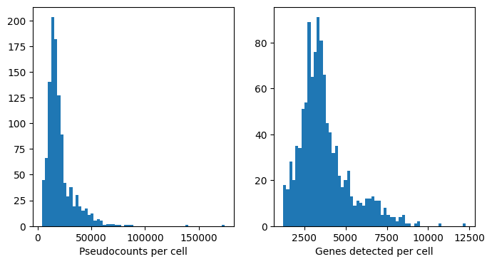
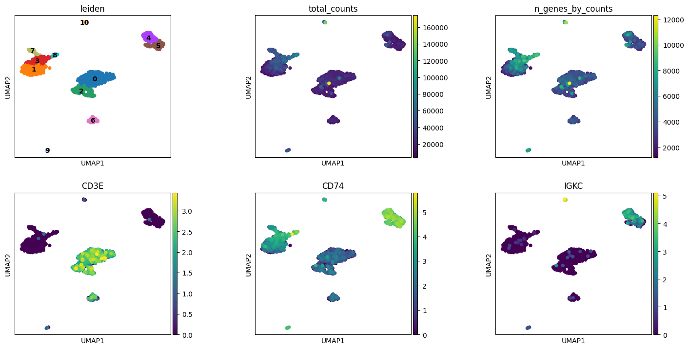
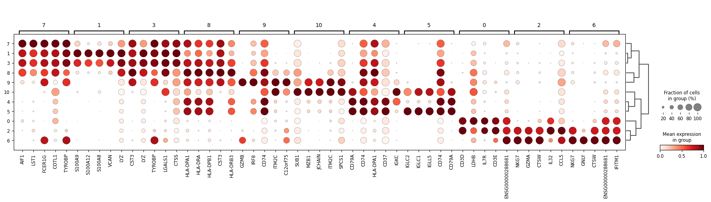

Single-Cell Analysis of Malva Quantification¶
This notebook performs standard single-cell analysis on the gene expression data generated by malva quant. We will:
Load the pseudoquantification results
Filter cells and genes by quality metrics
Normalize and identify highly variable genes
Cluster cells and visualize with UMAP
Identify marker genes for each cluster
Prerequisites: Run 1_run_malva.sh first to generate the input files.
Load the data¶
[2]:
import scanpy as sc
import matplotlib.pyplot as plt
[ ]:
# Load the h5ad file generated by malva quant
adata = sc.read_h5ad("quant/pbmc_1k_v3/pseudoquant.h5ad")
adata.var_names_make_unique()
print(f"Loaded {adata.n_obs} cells and {adata.n_vars} genes")
[ ]:
# Calculate QC metrics: total counts and genes detected per cell
sc.pp.calculate_qc_metrics(adata, inplace=True)
# Filter out low-quality cells and rarely detected genes
sc.pp.filter_cells(adata, min_genes=1200)
sc.pp.filter_genes(adata, min_cells=10)
print(f"After filtering: {adata.n_obs} cells and {adata.n_vars} genes")
[ ]:
# Visualize QC distributions
fig, axs = plt.subplots(1, 2, figsize=(8, 4))
axs[0].hist(adata.obs["total_counts"], bins=60)
axs[1].hist(adata.obs["n_genes_by_counts"], bins=60)
axs[0].set_xlabel("Pseudocounts per cell")
axs[1].set_xlabel("Genes detected per cell")
plt.show()

Normalization and feature selection¶
[ ]:
# Standard log-normalization
sc.pp.normalize_total(adata, inplace=True)
sc.pp.log1p(adata)
[ ]:
# Select highly variable genes for dimensionality reduction
sc.pp.highly_variable_genes(adata, flavor="seurat", n_top_genes=2000)
Dimensionality reduction and clustering¶
[ ]:
# PCA, neighbor graph, and Leiden clustering
sc.pp.pca(adata)
sc.pp.neighbors(adata)
sc.tl.leiden(adata, resolution = 0.9, key_added="leiden")
sc.tl.umap(adata)
[ ]:
# Visualize clusters and key PBMC markers
# CD3E: T cells, CD74: antigen-presenting cells, IGKC: B cells
plt.rcParams["figure.figsize"] = (4, 4)
sc.pl.umap(adata, color=["leiden", "total_counts", "n_genes_by_counts", "CD3E", "CD74", "IGKC"], wspace=0.4, ncols=3, legend_loc = "on data")

Marker gene identification¶
[ ]:
# Find differentially expressed genes for each cluster
sc.tl.rank_genes_groups(adata, 'leiden')
sc.tl.dendrogram(adata, 'leiden')
[ ]:
# Dotplot of top marker genes per cluster
sc.pl.rank_genes_groups_dotplot(adata, n_genes=5, standard_scale='var', min_logfoldchange=2)

Save results for sequence search¶
We save the clustered data for use in the next notebook.
[ ]:
adata.write_h5ad("quant/pbmc_1k_v3/pseudoquant_clustered.h5ad")